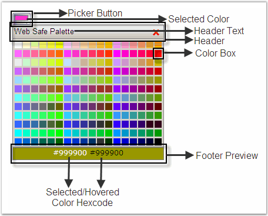

AJAX ColorPicker control is an ASP.NET AJAX control that can be used to select the colors available in the color palette. The color picker is available with various preset palettes and various display modes.

Figure 140
Since the AJAX ColorPicker is an ASP.NET AJAX control, the page requires a script manager to be placed before the ColorPicker is instantiated.
 Creating ColorPicker
Creating ColorPicker